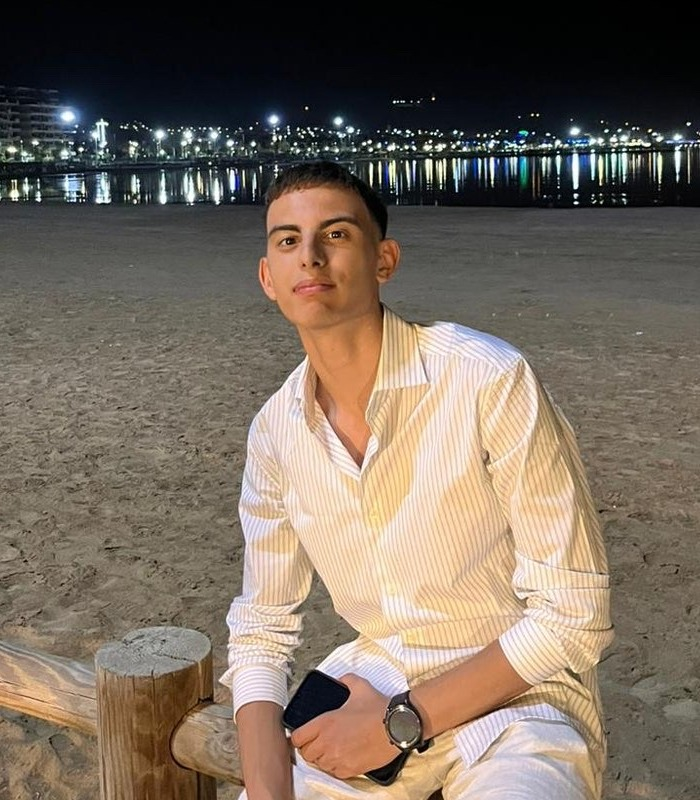

Ilyas El Fadili
OprichterIk studeer Chemie aan KdG en wil met Students4U mijn kennis en ervaring delen om leerlingen sterker te maken in wiskunde.
0492 44 60 19Students4U is een initiatief van studenten die andere leerlingen willen helpen met wiskunde. We leggen de leerstof rustig uit, oefenen samen en nemen tijd voor vragen.
De ene leerling heeft wat meer uitleg nodig dan de andere. Dat is helemaal normaal. We willen dat iedereen vragen kan stellen, fouten durft maken en de leerstof op zijn eigen tempo kan inoefenen.
We geven wiskundebegeleiding aan leerlingen van het 1ste tot en met het 4de middelbaar. De lessen bestaan uit uitleg, samen oefenen en individuele hulp wanneer dat nodig is.
Gedreven studenten met een passie voor onderwijs en het begeleiden van andere leerlingen.

Ik studeer Chemie aan KdG en wil met Students4U mijn kennis en ervaring delen om leerlingen sterker te maken in wiskunde.
0492 44 60 19Ik studeer Bio-ingenieurswetenschappen en wil mijn wetenschappelijke achtergrond inzetten om leerlingen helder en persoonlijk te begeleiden.
0489 14 59 85Bekijk de inhoud, prijs en praktische informatie van het pakket.